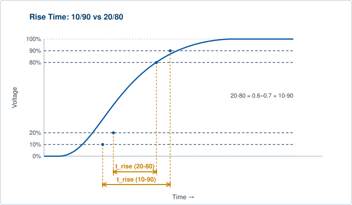
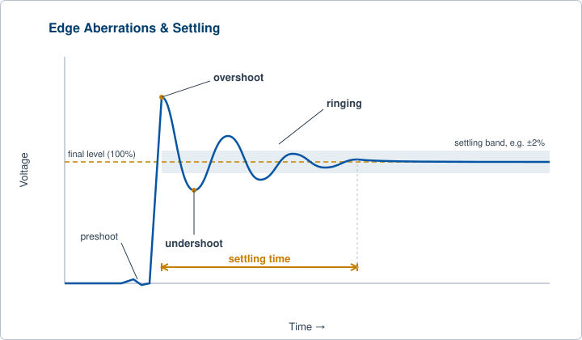
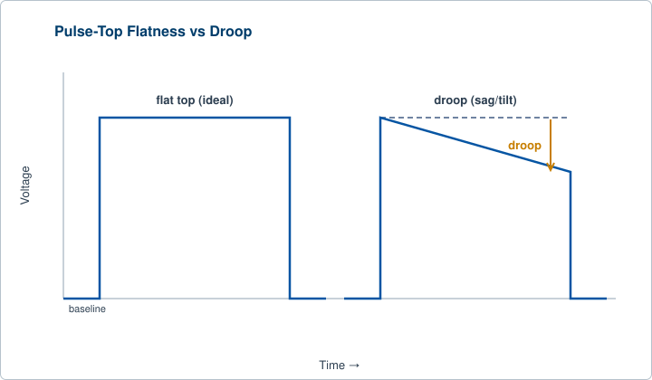
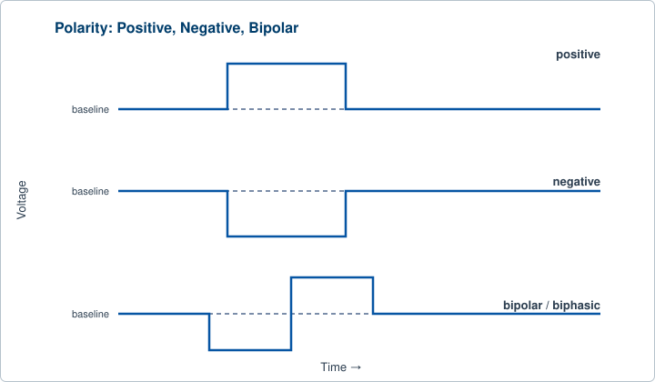
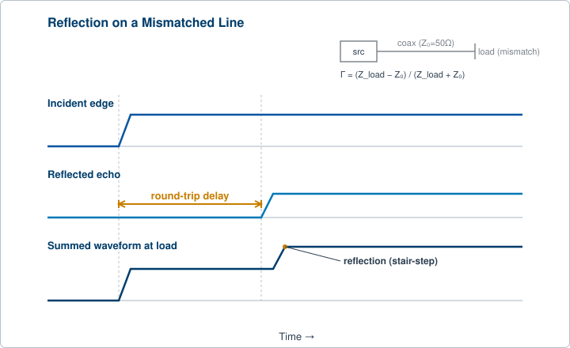
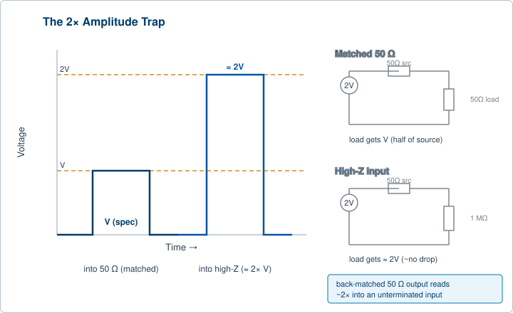

Chapter 1 introduced rise time and overshoot as two of the properties a pulse generator must control. This chapter treats the whole subject in depth, because pulse shape is where a timing specification becomes a real event in the lab. A digital delay or pulse generator does one job: it places voltage edges in time. Every downstream event, the trigger that fires a laser, the gate that opens a detector, the clock that strobes a sample-and-hold, is referenced to an edge crossing a threshold. If that edge is slow, noisy, or unstable, the moment of crossing moves, and the timing accuracy you paid for leaks away. Two ideas run through everything below. Fast clean edges preserve timing. And the cable and the load are part of the instrument: a perfect pulse at the front panel can arrive at the device under test badly degraded if the path is mishandled.
Rise time is the interval an edge takes to climb from a low reference level to a high reference level. Fall time is the same measurement on the trailing transition, from high back to low. Neither is measured between the absolute baseline and the absolute top. The very corners of a real edge are rounded and ill-defined, so the measurement is taken between two percentage points of the full amplitude.
Two conventions are common, and they do not agree. The 10% to 90% convention is the traditional one, and the one most often quoted on datasheets. It captures the bulk of the transition. The 20% to 80% convention is increasingly used for high-speed work because it stays clear of the rounded corners near the baseline and the top, where overshoot and settling can corrupt the reading. For the same physical edge, the 20-80 number is smaller, roughly 0.6 to 0.7 of the 10-90 value for a simple exponential edge. The consequence is blunt: a rise time spec is meaningless without stating which reference points were used. Comparing a 10-90 figure on one sheet to a 20-80 figure on another is comparing two different measurements of the same thing.

A fast edge is rich in high-frequency content. The link between the edge and the frequency span needed to carry it is the bandwidth-rise time product:
Bandwidth (-3 dB) x t_rise (10-90) is approximately 0.35
The constant of 0.35 comes from the single-pole RC model. For the 20-80 convention the constant is about 0.22, and for a Gaussian-shaped edge it is closer to 0.34. The rule is an estimate, not a law, but it is a useful one. A 1 ns edge implies frequency content out to roughly 350 MHz. That number tells you immediately what bandwidth your cable, your scope, and your load must support to keep the edge intact. Starve any link in that chain of bandwidth and the edge slows down.
The rise time you observe is never the rise time of the source alone. It is the combination of the source, the cable, any fixture, and the measuring instrument. For two cascaded stages that do not interact, the rise times combine as a root-sum-of-squares:
t_observed is approximately sqrt( t_signal^2 + t_scope^2 )
This extends to any number of stages, each adding its square to the total. The practical lesson is that to measure a fast edge honestly, your measurement gear must be several times faster than the edge, or you must correct for it. The same rule explains why a fast generator can look slow on the bench: a slow scope, a high-capacitance cable, or a poorly matched fixture each adds in quadrature and can dominate the result. At the silicon level, rise time is set by how fast the output stage charges and discharges stray capacitance, approximated for a single-pole path as t_rise (10-90) is approximately 2.2 x R x C. Lower output capacitance and lower driving impedance both speed the edge.
Fast edges are not a vanity number. A steeper crossing of any trigger threshold means less voltage noise translates into timing uncertainty, because timing error from amplitude noise is roughly the noise voltage divided by the edge slew rate. This is the direct link between edge speed and jitter. Where the application demands it, BNC offers fast-edge instruments built for exactly this: the Model 765 specifies a rise time under 70 ps, and the femtosecond-class Model 745T family is built for the finest edge placement BNC makes. For the exact figures on any model, see the current datasheet.
A real edge does not stop cleanly at its final level. After a fast transition the voltage can swing past the target and oscillate around it before coming to rest. Chapter 1 introduced overshoot as ringing at the top of the pulse. Here is the full vocabulary, because each term names a distinct fault.
Overshoot is the amount the leading edge rises above the final top level, usually quoted as a percentage of the pulse amplitude. Undershoot is the symmetric effect: the voltage dips below the final level before recovering, and the term is also used for a falling edge that dips below the baseline. Ringing is the damped oscillation around the final level that follows overshoot, the system resonating after being kicked by a fast edge. Preshoot is a smaller artifact appearing just before the main edge, often a sign of coupling or filtering in the path. Settling time is how long the output takes to enter and stay within a defined error band around the final value, say within 2% of the top. It is the practical measure of when the pulse top is actually usable.

Overshoot and ringing come from two sources, and telling them apart is a routine bench diagnosis. Inside the instrument they arise from parasitic inductance and capacitance in the output stage, and from any peaking used to speed the edge. Outside the instrument they arise from impedance mismatch and reflections in the cable and load, the subject of section 2.5. The two often look identical on a scope. The way to tell which is which is to change the cable length or the termination and watch what moves: path-related ringing shifts with the cable, internal ringing does not. Excessive overshoot and slow settling matter because they delay the moment the pulse top is trustworthy, and because ringing near the threshold can cause false or double triggers downstream.
Between the leading and trailing edges sits the pulse top, the flat region that is supposed to hold a constant level. A clean top is flat and quiet. A degraded one shows characteristic faults. Droop, also called sag or tilt, is a gradual decline of the top level across the width of the pulse. It is typically caused by AC coupling or by capacitors in the signal path that cannot hold charge for the full pulse duration, and it is most visible on long, wide pulses. Top aberrations are the residual ringing, ripple, and settling tails from the leading edge that have not died out by mid-pulse. Rounding is a softened corner where edge meets top, a sign of limited bandwidth. A runt pulse never reaches full amplitude at all, usually a symptom of drive or timing trouble rather than shape alone.

The ideal is easy to picture. The leading edge rises fast, overshoots minimally, settles quickly into a flat plateau that holds its level for the full programmed width, then falls cleanly back to baseline. This matters because any sampling or gating system that opens during the pulse top assumes the top is at a known level. Droop and ripple turn that known level into a moving target, which becomes an amplitude error in whatever measurement the instrument is driving.
A detector gate is set to integrate charge during a 10 microsecond pulse top. If the top droops 5% across that window, the charge collected late in the gate is weighted differently from the charge collected early. The result is a systematic measurement error that no amount of timing precision can fix, because the fault is in the shape of the top, not the placement of the edges.
Polarity describes the direction a pulse moves relative to its resting level. A positive pulse rests at a low baseline, often zero, and steps upward for the duration of the pulse before returning. A negative pulse rests at a higher level and steps downward. A bipolar output can produce both, or a pulse that swings from a negative level to a positive level, and some designs produce a negative excursion immediately following a positive one, a biphasic shape.

Polarity is selectable because downstream devices expect different things. Many logic families and trigger inputs respond to a rising edge. Some detectors, gating circuits, and physics loads expect a negative-going drive. Setting polarity per channel lets one instrument serve a mix of loads without external inverters, which would add their own delay and degrade the edge.
Three separate controls together define the voltage the load sees. Amplitude is the size of the voltage step from baseline to top. Baseline, sometimes called the low level, is the resting voltage the output holds between pulses. Offset, or bias, shifts the whole pulse, baseline and top together, up or down. Offset is how you place a fixed-amplitude pulse into the voltage window a particular load needs. Polarity sets the direction, baseline sets the resting level, amplitude sets the size of the step, and offset slides the pair to where the load wants them.
At slow edges a cable is just a wire. At fast edges a cable is a transmission line with a characteristic impedance, conventionally 50 ohms, and any impedance mismatch at either end causes reflections that distort the pulse. When a fast edge reaches a point where the impedance changes, part of the energy reflects back toward the source. The size and sign of the reflected wave are set by the reflection coefficient:
Gamma = (Z_load - Z_0) / (Z_load + Z_0)
A perfectly matched load, where Z_load equals Z_0, gives Gamma = 0 and no reflection. An open circuit reflects the full wave with the same sign. A short reflects it inverted. A reflected wave travels back up the cable, and if the source is also mismatched it reflects again, bouncing back to the load. Each bounce arrives delayed by the round-trip travel time of the cable. The sum of the original edge and these delayed echoes is the ringing and stair-step distortion seen on a poorly terminated line.

Fast edges make reflections worse. An echo only shows as visible distortion when the round-trip cable delay is comparable to or longer than the edge rise time. A slow edge smears the echoes into itself and hides them. A fast edge is short compared to the cable delay, so each reflection lands as a distinct, visible aberration. This is why a cable that is harmless at 100 ns edges produces severe ringing at sub-nanosecond edges. Two techniques control it. Load, or parallel, termination places a 50 ohm resistor at the far end so the edge is absorbed when it first arrives and no reflection is launched. This gives the cleanest single edge and is the default for high-speed work. Source, or series, termination gives the generator a 50 ohm output impedance so that any reflection returning from a mismatched far end is absorbed at the source rather than re-reflected. Use controlled-impedance 50 ohm coax with low capacitance per unit length, keep runs short, and avoid stubs, adapters, and tee connections, since each is a fresh impedance discontinuity.
Here is the single most common bench surprise, and it deserves its own treatment. A pulse generator output is designed and specified for a 50 ohm load. The instrument's source impedance and the load form a voltage divider. With a 50 ohm back-matched output driving a matched 50 ohm load, the two halves of the divider are equal, and the load receives the specified amplitude. Drive that same output into a high-impedance input instead, for example a 1 megohm oscilloscope input, and almost none of the voltage is dropped across the source resistance. The load receives close to twice the specified amplitude.

This factor of two is not a fault. A reader who programs a 2 V pulse and reads about 4 V on a high-impedance scope has not found a broken instrument. They have found an unterminated line. The fix is to terminate at the load: switch the scope input to 50 ohms if it supports it, or add an inline 50 ohm feed-through terminator at the high-impedance input. The same back-matched 50 ohm source that creates this doubling is what lets the instrument tolerate an imperfect load without ringing, which is exactly why amplitude specs are stated into 50 ohms in the first place. Treat the cable and the termination as part of the timing system, not as optional housekeeping.
You program a BNC pulse generator for a 2.5 V amplitude and connect it directly to a 1 megohm scope input. The scope reads roughly 5 V and you suspect a calibration error. Before opening a support ticket, add a 50 ohm feed-through terminator at the scope, or switch the input to 50 ohm coupling. The reading drops to the programmed 2.5 V. Nothing was wrong with the instrument. The line was simply unterminated, and the back-matched source delivered its full open-circuit voltage. For the exact source impedance and amplitude ranges of a given model, see the current datasheet.
Good pulse shape is not separate from good timing. Fast edges, minimal overshoot, quiet tops, and proper termination are the preconditions for the delay and width accuracy that the rest of this book depends on. An edge that rings across its threshold can cross more than once, producing double edges and large apparent jitter, so every fault described in this chapter eventually shows up as a timing error. The next chapter turns to placing those clean edges precisely in time, through gating, delaying, and clocking.
Check your understanding. Five quick questions on this chapter.